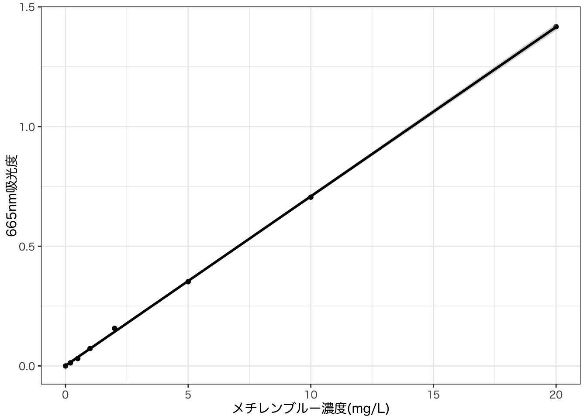
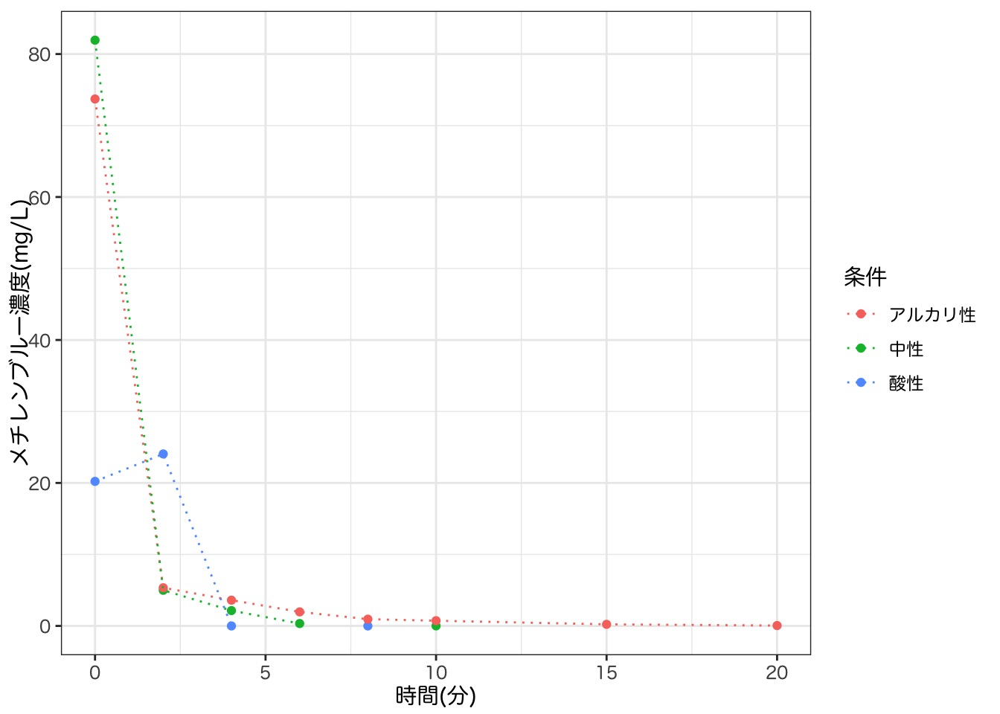
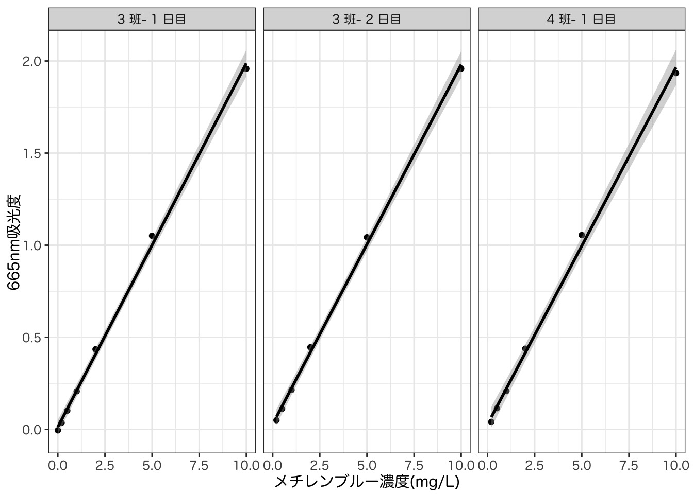
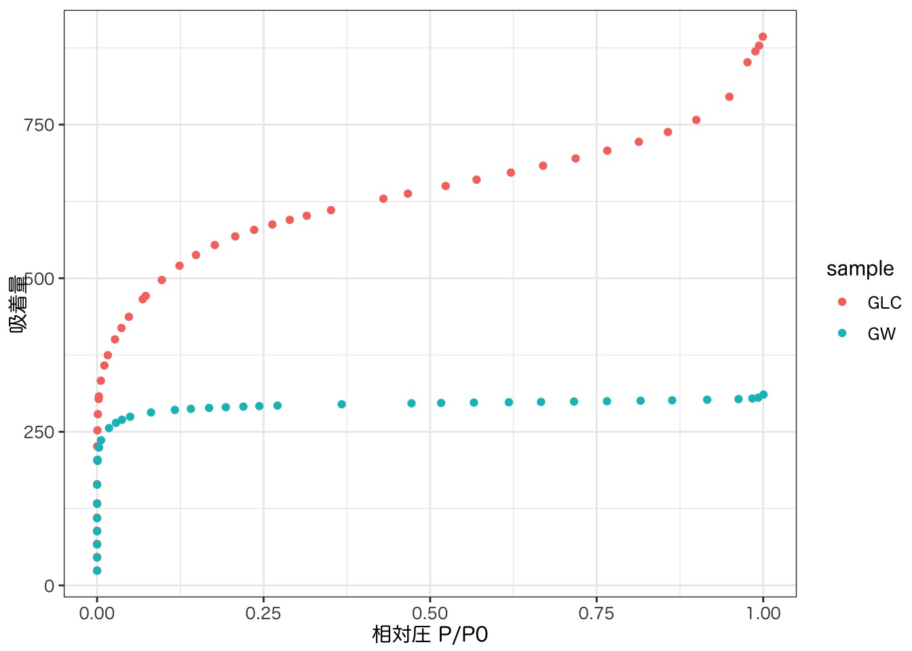
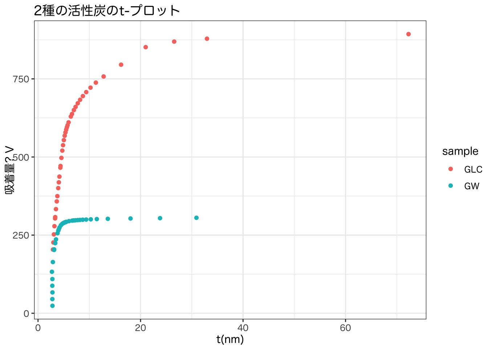
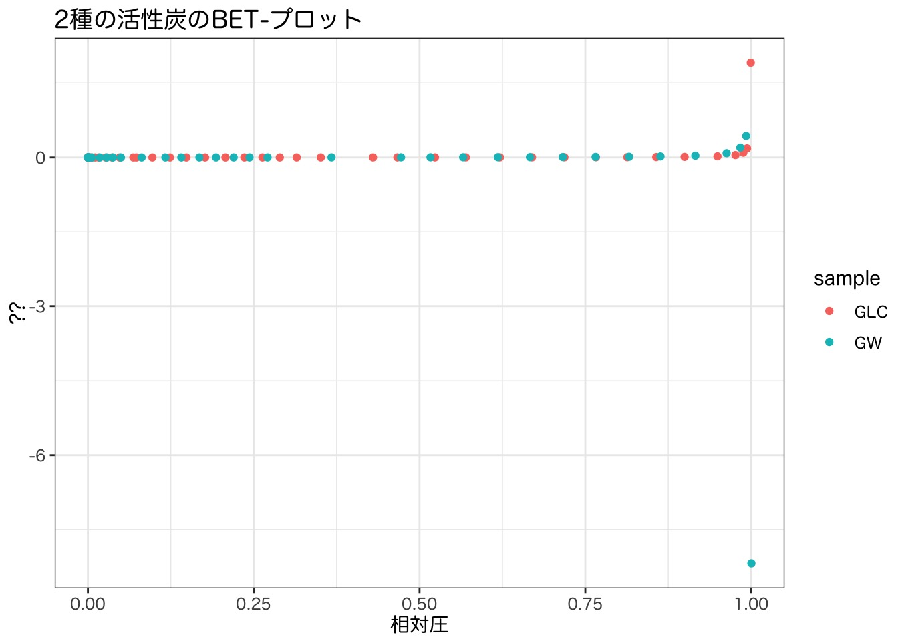
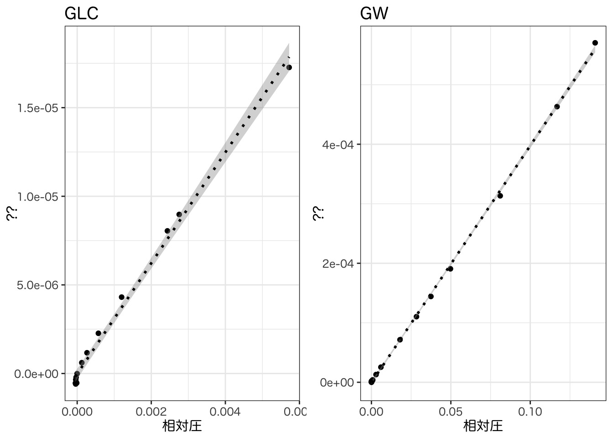

| MB濃度(mg/L) | 665nm吸光度 |
|---|---|
| 0.0 | 0.000 |
| 0.2 | 0.013 |
| 0.5 | 0.031 |
| 1.0 | 0.073 |
| 2.0 | 0.157 |
| 5.0 | 0.352 |
| 10.0 | 0.705 |
| 20.0 | 1.417 |
浄水処理実験 実験レポート
ここにhtml版へのリンクを貼りたい。
目的
上水実験課題では以下の項目を扱い、浄水処理の物理化学的な原理について定性的・定量的な両面から理解を深めることを目的とする。
凝集沈殿における最適条件の決定
急速濾過における目詰まり状況の解析
オゾンによる有機物分解
活性炭の吸着特性の解析
消毒
塩素消毒
紫外線消毒
課題A オゾンによる有機物分解
実験概要
オゾン処理は主に高度処理で用いられ、
結果
まず、メチレンブルー濃度算出に用いる検量線を作成した。各班の実測値を Table 1 に示す。
上記のデータを用いて最小二乗法で検量線を作成したところ、今回採用した希釈段階の全域に渡ってデータは線形な変化であることを確認することができた。

図 Figure 1 の検量線を用いて、各時刻でのメチレンブルー濃度を算出した。pH・オゾン濃度・TOC濃度の実測値と合わせ、 Table 2 に結果を示す。
| 時間.分. | 吸光度 | 吸光度_希釈 | pH | O3_conc | MB_conc | TOC濃度 |
|---|---|---|---|---|---|---|
| 酸性 | ||||||
| 0 | 0.478 | 3 | 2.17 | 1.06 | 20.218306309 | NA |
| 2 | NA | 2 | NA | NA | NA | NA |
| 4 | 0.001 | 1 | NA | NA | -0.005718490 | NA |
| 6 | -0.001 | 1 | NA | NA | 検出下限 | NA |
| 8 | 0.001 | 1 | NA | NA | -0.005718490 | NA |
| 10 | -0.004 | 1 | NA | NA | 検出下限 | NA |
| 15 | -0.007 | 1 | NA | NA | 検出下限 | NA |
| 20 | -0.003 | 1 | 2.11 | 0.83 | 検出下限 | NA |
| 中性 | ||||||
| 0 | 5.799 | 3 | 7.00 | 1.06 | 245.947639897 | NA |
| 2 | 0.354 | 1 | NA | NA | 4.985978231 | NA |
| 4 | 0.153 | 1 | NA | NA | 2.143680665 | NA |
| 6 | 0.025 | 1 | NA | NA | 0.333660324 | NA |
| 8 | -0.001 | 1 | NA | NA | 検出下限 | NA |
| 10 | 0.002 | 1 | NA | NA | 0.008422294 | NA |
| 15 | -0.005 | 1 | NA | NA | 検出下限 | NA |
| 20 | -0.002 | 1 | 7.01 | 0.03 | 検出下限 | NA |
| アルカリ性 | ||||||
| 0 | 5.217 | 3 | 12.25 | 1.06 | 221.257831186 | NA |
| 2 | 0.379 | 1 | NA | NA | 5.339497829 | NA |
| 4 | 0.256 | 1 | NA | NA | 3.600181408 | NA |
| 6 | 0.140 | 1 | NA | NA | 1.959850474 | NA |
| 8 | 0.068 | 1 | NA | NA | 0.941714032 | NA |
| 10 | 0.053 | 1 | NA | NA | 0.729602274 | NA |
| 15 | 0.017 | 1 | NA | NA | 0.220534053 | NA |
| 20 | 0.005 | 1 | 11.88 | 0.00 | 0.050844646 | NA |
メチレンブルー濃度の時間変化を図示すると Figure 2 のようになった。

考察
課題B 急速濾過における目詰まり状況と処理性能の解析
実験概要
結果
マノメータ水位の変化を Table 3 に示す。
| 班 | filter | manometer | tapwtr | time_15 | time_30 | time_45 | time_60 | time_75 | time_90 | time_95 | time_105 | time_120 |
|---|---|---|---|---|---|---|---|---|---|---|---|---|
| 3 | A | 1 | 42.4 | 41.7 | 41.9 | 41.4 | 41.0 | 39.9 | 38.5 | 37.5 | NA | NA |
| 3 | A | 2 | 43.7 | 42.9 | 43.0 | 42.7 | 42.1 | 40.9 | 39.4 | 38.2 | NA | NA |
| 3 | A | 3 | 45.1 | 44.2 | 44.3 | 43.9 | 43.3 | 42.0 | 40.3 | 39.0 | NA | NA |
| 3 | A | 4 | 46.5 | 45.6 | 45.8 | 45.5 | 44.7 | 43.3 | 41.5 | 39.9 | NA | NA |
| 3 | A | 5 | 48.3 | 47.4 | 47.7 | 47.4 | 46.7 | 45.0 | 43.1 | 41.2 | NA | NA |
| 3 | A | 6 | 50.4 | 49.8 | 50.4 | 50.3 | 49.7 | 48.0 | 45.7 | 43.7 | NA | NA |
| 3 | A | 7 | 51.5 | 51.6 | 53.4 | 56.8 | 55.3 | 84.7 | 119.0 | 128.0 | NA | NA |
| 3 | A | 8 | 51.6 | 51.6 | 53.8 | 56.9 | 55.6 | 84.7 | 119.0 | 128.0 | NA | NA |
| 3 | B | 1 | 41.6 | 41.8 | 41.8 | 41.8 | 41.7 | 41.6 | 41.4 | NA | 41.5 | 41.3 |
| 3 | B | 2 | 43.2 | 43.3 | 43.2 | 43.2 | 43.1 | 43.0 | 42.9 | NA | 42.8 | 42.7 |
| 3 | B | 3 | 44.7 | NA | 44.8 | 44.8 | 44.7 | 44.6 | 44.4 | NA | 44.5 | 44.5 |
| 3 | B | 4 | 46.4 | NA | 46.7 | 46.6 | 46.5 | 46.5 | 46.1 | NA | 46.4 | 46.2 |
| 3 | B | 5 | 48.5 | 48.9 | 48.9 | 49.1 | 49.1 | 49.0 | 49.0 | NA | 48.9 | 48.8 |
| 3 | B | 6 | 50.9 | 51.7 | 52.3 | 52.6 | 53.1 | 53.5 | 54.1 | NA | 54.8 | 55.7 |
| 3 | B | 7 | 53.0 | 55.6 | 57.7 | 60.0 | 62.5 | 64.8 | 67.6 | NA | 70.0 | 73.1 |
| 3 | B | 8 | 53.0 | 55.4 | 57.6 | 59.9 | 62.4 | 64.8 | 67.6 | NA | 70.0 | 73.1 |
| 3 | C | 1 | 43.9 | 43.8 | 43.8 | 43.6 | 43.6 | 43.5 | 43.4 | NA | 43.4 | 43.7 |
| 3 | C | 2 | 45.3 | 45.3 | 45.4 | 45.4 | 45.4 | 45.4 | 45.3 | NA | 45.4 | 45.2 |
| 3 | C | 3 | 47.3 | 47.5 | 47.9 | 48.0 | 48.3 | 48.5 | 48.6 | NA | 48.8 | 48.9 |
| 3 | C | 4 | 49.2 | 49.9 | 50.7 | 51.4 | 52.1 | 52.8 | 53.4 | NA | 54.2 | 55.0 |
| 3 | C | 5 | 49.6 | 50.4 | 51.3 | 52.0 | 52.8 | 53.5 | 54.3 | NA | 55.0 | 55.9 |
| 3 | C | 6 | 50.1 | 51.2 | 52.0 | 52.9 | 53.7 | 54.5 | 55.4 | NA | 56.3 | 57.2 |
| 3 | C | 7 | 50.6 | 51.7 | 52.7 | 53.4 | 54.4 | 55.3 | 56.2 | NA | 57.2 | 58.2 |
| 3 | C | 8 | 50.6 | 51.5 | 52.7 | 53.4 | 54.4 | 55.3 | 56.2 | NA | 57.2 | 58.2 |
| 1 | A | 1 | 40.5 | 41.7 | 41.8 | 41.6 | 41.6 | 41.5 | 41.4 | NA | NA | NA |
| 1 | A | 2 | 41.8 | 43.3 | 43.1 | 43.2 | 43.3 | 43.2 | 42.9 | NA | NA | NA |
| 1 | A | 3 | 43.2 | 48.0 | 45.1 | 44.9 | 44.4 | 45.0 | 44.3 | NA | NA | NA |
| 1 | A | 4 | 44.8 | 46.5 | 47.2 | 46.9 | 47.0 | 47.0 | 46.5 | NA | NA | NA |
| 1 | A | 5 | 46.5 | 48.8 | 49.5 | 49.2 | 49.4 | 49.3 | 48.8 | NA | NA | NA |
| 1 | A | 6 | 48.6 | 51.9 | 52.3 | 52.3 | 53.0 | 53.2 | 53.0 | NA | NA | NA |
| 1 | A | 7 | 49.5 | 52.8 | 54.0 | 54.6 | 56.5 | 58.2 | 60.4 | NA | NA | NA |
| 1 | A | 8 | 49.5 | 52.8 | 54.0 | 54.6 | 56.5 | 58.2 | 60.4 | NA | NA | NA |
| 1 | B | 1 | 40.5 | 41.3 | 41.4 | 41.3 | 41.2 | 41.3 | 41.3 | NA | 41.2 | 41.1 |
| 1 | B | 2 | 41.8 | 42.7 | 42.8 | 42.8 | 43.0 | 43.0 | 42.9 | NA | 42.8 | 42.7 |
| 1 | B | 3 | 43.7 | 44.6 | 44.7 | 44.7 | 44.8 | 44.7 | 44.9 | NA | 44.6 | 44.5 |
| 1 | B | 4 | 45.3 | 46.4 | 46.5 | 46.7 | 46.8 | 46.7 | 46.7 | NA | 46.6 | 46.5 |
| 1 | B | 5 | 47.1 | 48.8 | 46.7 | 49.0 | 49.3 | 49.4 | 49.4 | NA | 49.3 | 48.8 |
| 1 | B | 6 | 49.2 | 51.4 | 52.1 | 52.5 | 53.3 | 53.8 | 54.3 | NA | 54.5 | 54.8 |
| 1 | B | 7 | 51.2 | 54.9 | 57.1 | 59.5 | 62.1 | 64.9 | 67.2 | NA | 69.8 | 72.2 |
| 1 | B | 8 | 50.9 | 54.8 | 57.0 | 59.4 | 62.1 | 64.8 | 67.2 | NA | 69.8 | 72.1 |
| 1 | C | 1 | 42.9 | 41.1 | 39.0 | 38.8 | 43.7 | 44.0 | 43.9 | NA | 43.8 | 43.8 |
| 1 | C | 2 | 44.4 | 43.0 | 40.1 | 40.0 | 45.9 | 46.0 | 46.0 | NA | 46.0 | 46.0 |
| 1 | C | 3 | 46.3 | 45.0 | 41.7 | 41.7 | 48.8 | 49.3 | 49.4 | NA | 49.8 | 49.9 |
| 1 | C | 4 | 48.2 | 47.1 | 43.8 | 43.9 | 52.8 | 54.0 | 54.9 | NA | 55.8 | 56.6 |
| 1 | C | 5 | 48.6 | 48.0 | 44.2 | 44.4 | 53.6 | 54.8 | 55.8 | NA | 56.8 | 57.7 |
| 1 | C | 6 | 49.0 | 49.0 | 44.8 | 45.0 | 54.5 | 55.8 | 57.0 | NA | 58.0 | 59.2 |
| 1 | C | 7 | 49.5 | 49.8 | 45.1 | 45.6 | 55.3 | 56.8 | 58.0 | NA | 59.3 | 60.4 |
| 1 | C | 8 | 49.6 | 50.0 | 45.0 | 45.4 | 55.4 | 56.8 | 58.0 | NA | 59.2 | 60.4 |
逆洗時に採水を行い、SSを測定した結果を Table 4 に示す。
| time | bef_g | aft_g | amt_ml | SS |
|---|---|---|---|---|
| 1 | 0.4036 | 0.4116 | 100 | 80 |
| 2 | 0.4000 | 0.4064 | 100 | 64 |
| 3 | 0.4134 | 0.4208 | 100 | 74 |
| 4 | 0.3999 | 0.5724 | 100 | 1,725 |
| 5 | 0.4012 | 0.4637 | 100 | 625 |
| 6 | 0.4069 | 0.4402 | 100 | 333 |
| 7 | 0.4069 | 0.4199 | 100 | 130 |
考察
マノメータの
課題C 活性炭による色度成分の吸着
実験概要
BELSORP miniによる解析
結果
活性炭によるメチレンブルーの吸着
活性炭を投入し、経時的に665nm吸光度を計測した結果を以下に示す。
次に、複数の希釈列を作成し、665nm吸光度を測定すると Figure 3 のような検量線データが得られた。なお、私達3班は2日目の測定時に新しく検量線を作成していたが、4班は作成していなかったとのことなので、 Figure 3 には3種類の検量線データについて図示した。また、各検量線の回帰式とR^2値を Table 5 に示した。

| 検量線 | 回帰式とR^2値 |
|---|---|
| 3班-1日目 | y = 0.166x + 0.0758, R^2 = 0.9888 |
| 3班-2日目 | y = 0.169x + 0.093, R^2 = 0.9923 |
| 4班-1日目 | y = 0.168x + 0.091, R^2 = 0.9922 |
?@tbl-abs-models に示した通り、R^2値はどれも約0.99となっているものの、これはメチレンブルー濃度が20mg/Lの希釈列に引っ張られた結果であると考えられる。そのため、20mg/Lの希釈列を除いて再度検量線を作成した結果を Figure 4 、 Table 6 に示す。

| 検量線 | 回帰式とR^2値 |
|---|---|
| 3班-1日目 | y = 0.197x + 0.0131, R^2 = 0.9984 |
| 3班-2日目 | y = 0.195x + 0.029, R^2 = 0.9988 |
| 4班-1日目 | y = 0.194x + 0.0281, R^2 = 0.9978 |
検量線を用いて濃度を計算した結果を Table 7 に示す。なお、4班のデータについては、十分に希釈を行っておらず、検量線が外挿となってしまった場合がある。その場合は数値の横に*をつけて区別した。
Table 7 の濃度変化データを図示すると ?@fig-abs のようになった。
Belsorpによる細孔分布解析
BELSORP miniにより活性炭の細孔分布について解析した結果について、今野さんのご協力を頂き、機器の生データを取得することができたため、。
まず、それぞれの活性炭の等温吸着曲線は Figure 5 のようになった。
Warning: There was 1 warning in `mutate()`.
ℹ In argument: `t_nm = de_Boer(Pe, P0)`.
Caused by warning in `log()`:
! NaNs produced

GW活性炭(浄水処理用)は、
一方で、GLC活性炭には、相対圧が1付近でも吸着量の立ち上がりが見られ、大きめの細孔も吸着作用に寄与していることが示唆される結果となった。
次に、Figure 6 に各活性炭のt-plotを示す。t-plotとは…
tの算出には Equation 1 を用いた。
※ここに出典を入れないと駄目。
\[ t = 354(\frac{-5}{ln(P_e/P_0)})^{1/3} \tag{1}\]

また、以下のようなBETプロットを描画することで、表面積を概算することができる。
BETプロットは Equation 2 で表され、直線
※ここにサイトなどで良いので出典を入れる。
\[ BET=P_0 \tag{2}\]

BETプロットが直線形になる範囲において、近似曲線を最小二乗法で求めた結果を Figure 8 に示す。

考察
課題D 凝集沈殿における最適条件の決定
実験概要
概要をここに書く。
結果
まず、二種類の水試料について、凝集剤の濃度を変化させて凝集剤の最適添加量を求めた。実験結果を Table 8 に示す。
なお、m-アルカリ度の測定にあたっては、滴定に用いる0.01mol/L硫酸を…
標定を行った結果、ファクターは (※ここに数値埋め込み) となった。
| 凝集剤濃度 | 濁度 | pH.後. | 水温 | mアルカリ度 |
滴定の生データ
|
||
|---|---|---|---|---|---|---|---|
| 滴定_前 | 滴定_後 | 滴定試料量 | |||||
| 三四郎 | |||||||
| 0 | 6.508 | 7.12 | 11.6 | 44.7 | 19.69 | 15.68 | 100 |
| 10 | 6.512 | 7.18 | 11.6 | 86.1 | 15.68 | 11.82 | 50 |
| 20 | 4.281 | 7.16 | 11.6 | 81.0 | 11.82 | 8.19 | 50 |
| 50 | 1.037 | 7.10 | 11.6 | 70.1 | 8.19 | 5.05 | 50 |
| 75 | 1.175 | 6.40 | 11.6 | 58.9 | 5.05 | 2.41 | 50 |
| 100 | 2.362 | 6.44 | 11.6 | 48.9 | 2.41 | 0.22 | 50 |
| カオリン | |||||||
| 0 | 3.574 | 6.99 | 20.7 | 39.9 | 6.90 | 5.11 | 50 |
| 10 | 3.630 | 7.17 | 20.7 | 36.2 | 5.11 | 3.49 | 50 |
| 20 | 2.134 | 7.00 | 20.7 | 33.0 | 3.49 | 2.01 | 50 |
| 50 | 3.982 | 6.87 | 20.7 | 24.3 | 2.01 | 0.92 | 50 |
| 75 | 5.790 | 6.48 | 20.7 | 10.5 | 0.92 | 0.45 | 50 |
| 100 | 6.949 | 5.90 | 20.7 | 2.9 | 0.45 | 0.32 | 50 |
濁度の除去性能を比較した結果、最適な凝集剤濃度は三四郎池の場合は??、カオリン原水の場合は??であるということがわかった。
次に、上記で求めた最適量だけ凝集剤を添加した条件の下で、pHを酸性~アルカリ性の数段階で変化させ、前後のpH変化ならびに、処理後の濁度・ゼータ電位・水温・m-アルカリ度を計測した結果を Table 9 に示す。なお、pHがおおよそ5よりも小さい条件においてはm-アルカリ度の測定は行っていない。
| 班 | 理論pH | pH前 | pH後 | 濁度 | ゼータ電位 | 水温 | 凝集剤添加量 | mアルカリ度 |
滴定の生データ
|
||
|---|---|---|---|---|---|---|---|---|---|---|---|
| 滴定_前 | 滴定_後 | 滴定試料量 | |||||||||
| 三四郎 | |||||||||||
| 3 | pH3 | 3.33 | 3.41 | 5.414 | -9.081 | NA | NA | NA | NA | NA | 50 |
| 3 | pH5 | 5.57 | 4.96 | 1.649 | -9.213 | NA | NA | NA | NA | NA | 50 |
| 3 | pH7 | 7.66 | 7.29 | 0.662 | -9.921 | NA | NA | 69.0 | 3.51 | 0.42 | 50 |
| 3 | pH9 | 8.88 | 7.62 | 4.241 | -10.440 | NA | NA | 79.7 | 7.08 | 3.51 | 50 |
| 3 | pH11 | 10.47 | 9.89 | 1.448 | -13.930 | NA | NA | 135.5 | 13.15 | 7.08 | 50 |
| 4 | pH3 | 3.33 | 3.32 | 9.978 | -11.260 | 17.1 | NA | NA | NA | NA | NA |
| 4 | pH5 | 5.14 | 4.56 | 8.163 | -6.576 | 17.1 | NA | NA | NA | NA | NA |
| 4 | pH7 | 7.22 | 5.84 | 9.479 | -11.680 | 17.2 | NA | NA | 4.12 | 2.30 | NA |
| 4 | pH9 | 8.92 | 8.92 | 4.306 | -9.827 | 17.3 | NA | NA | 6.18 | 0.52 | NA |
| 4 | pH11 | 10.48 | 10.48 | 2.016 | -14.610 | 17.4 | NA | NA | 16.02 | 4.12 | NA |
| 1 | pH3 | NA | NA | NA | NA | NA | NA | NA | NA | NA | NA |
| 1 | pH5 | NA | NA | NA | NA | NA | NA | NA | NA | NA | NA |
| 1 | pH7 | NA | NA | NA | NA | NA | NA | NA | NA | NA | NA |
| 1 | pH9 | NA | NA | NA | NA | NA | NA | NA | NA | NA | NA |
| 1 | pH11 | NA | NA | NA | NA | NA | NA | NA | NA | NA | NA |
| カオリン | |||||||||||
| 3 | pH3 | 3.88 | 3.48 | 3.679 | -12.770 | 19.3 | NA | NA | NA | NA | 50 |
| 3 | pH5 | 4.57 | 4.55 | 3.796 | -18.820 | 19.3 | NA | NA | NA | NA | 50 |
| 3 | pH7 | 7.10 | 7.23 | 3.241 | -10.390 | 19.3 | NA | 32.6 | 14.61 | 13.15 | 50 |
| 3 | pH9 | 8.55 | 7.73 | 2.088 | -17.640 | 19.3 | NA | 37.5 | 16.29 | 14.61 | 50 |
| 3 | pH11 | 10.67 | 10.48 | 3.830 | -15.340 | 19.3 | NA | 114.5 | 21.42 | 16.29 | 50 |
| 4 | pH3 | 3.33 | 3.19 | 5.598 | -13.980 | 17.9 | NA | NA | NA | NA | NA |
| 4 | pH5 | 5.02 | 4.67 | 5.120 | -19.470 | 18.0 | NA | NA | NA | NA | NA |
| 4 | pH7 | 6.87 | 6.49 | 2.676 | -17.370 | 19.0 | NA | NA | 3.65 | 0.51 | NA |
| 4 | pH9 | 9.10 | 6.88 | 3.372 | -15.580 | 19.0 | NA | NA | 19.60 | 15.91 | NA |
| 4 | pH11 | 10.50 | 9.97 | 5.247 | -16.750 | 19.2 | NA | NA | 15.91 | 8.00 | NA |
| 1 | pH3 | NA | NA | NA | NA | NA | NA | NA | NA | NA | NA |
| 1 | pH5 | NA | NA | NA | NA | NA | NA | NA | NA | NA | NA |
| 1 | pH7 | NA | NA | NA | NA | NA | NA | NA | NA | NA | NA |
| 1 | pH9 | NA | NA | NA | NA | NA | NA | NA | NA | NA | NA |
| 1 | pH11 | NA | NA | NA | NA | NA | NA | NA | NA | NA | NA |
考察
理論上、アルカリ度の減少は以下のようになる。
課題E 消毒
実験概要
2種類の消毒方法に関して実験を行う。
結果
各条件下でのコロニー数の計数結果を Table 10 に示す。
| 採水時刻 | コロニー数 |
|---|---|
| 塩素 - 水道水 | |
| t0 | \textbf{>300/>300}(×$10^3$), \textbf{100/91}(×$10^4$), \textbf{7/3}(×$10^5$) |
| t1 | \textbf{8/5}(×$10^2$), \textbf{1/0}(×$10^3$), \textbf{0/0}(×$10^4$) |
| t2 | \textbf{158/148}(×$10^1$), \textbf{16/9}(×$10^2$), \textbf{2/0}(×$10^3$) |
| t3 | \textbf{178/173}(×$10^1$), \textbf{23/21}(×$10^2$), \textbf{3/1}(×$10^3$) |
| 塩素 - 緩衝液A | |
| t0 | \textbf{>300/>300}(×$10^3$), \textbf{87/83}(×$10^4$), \textbf{15/10}(×$10^5$) |
| t1 | \textbf{6/12}(×$10^2$), \textbf{0/0}(×$10^3$), \textbf{0/0}(×$10^4$) |
| t2 | \textbf{148/129}(×$10^1$), \textbf{25/17}(×$10^2$), \textbf{3/2}(×$10^3$) |
| t3 | \textbf{97/90}(×$10^1$), \textbf{12/8}(×$10^2$), \textbf{3/2}(×$10^3$) |
| 塩素 - 緩衝液B | |
| t0 | \textbf{>300/>300}(×$10^3$), \textbf{172/155}(×$10^4$), \textbf{25/18}(×$10^5$) |
| t1 | \textbf{>300/>300}(×$10^2$), \textbf{>300/>300}(×$10^3$), \textbf{62/44}(×$10^4$) |
| t2 | \textbf{>300/>300}(×$10^1$), \textbf{>300/>300}(×$10^2$), \textbf{432/364}(×$10^3$) |
| t3 | \textbf{>300/>300}(×$10^1$), \textbf{>300/>300}(×$10^2$), \textbf{109/79}(×$10^3$) |
| 紫外線 - BW | |
| t0 | \textbf{>300/>300}(×$10^1$), \textbf{>300/>300}(×$10^2$), \textbf{278/185}(×$10^3$), \textbf{25/18}(×$10^4$) |
| t1 | \textbf{271/258}(×$10^1$), \textbf{35/30}(×$10^2$), \textbf{5/3}(×$10^3$) |
| t2 | \textbf{0/0}(×$10^1$), \textbf{1/0}(×$10^2$), \textbf{0/0}(×$10^3$) |
| t3 | \textbf{0/0}(×$10^1$), \textbf{0/0}(×$10^2$), \textbf{0/0}(×$10^3$) |
| 紫外線 - phr | |
| t0 | \textbf{>300/>300}(×$10^1$), \textbf{>300/>300}(×$10^2$), \textbf{>300/>300}(×$10^3$), \textbf{57/46}(×$10^4$) |
| t1 | \textbf{>300/>300}(×$10^1$), \textbf{>300/>300}(×$10^2$), \textbf{161/107}(×$10^3$) |
| t2 | \textbf{51/49}(×$10^1$), \textbf{7/3}(×$10^2$), \textbf{1/0}(×$10^3$) |
| t3 | \textbf{0/0}(×$10^1$), \textbf{0/0}(×$10^2$), \textbf{0/0}(×$10^3$) |
| 紫外線 - uvr | |
| t0 | \textbf{>300/>300}(×$10^1$), \textbf{>300/>300}(×$10^2$), \textbf{259/244}(×$10^3$), \textbf{30/28}(×$10^4$) |
| t1 | \textbf{>300/253}(×$10^1$), \textbf{31/26}(×$10^2$), \textbf{4/3}(×$10^3$) |
| t2 | \textbf{40/6}(×$10^1$), \textbf{0/0}(×$10^2$), \textbf{0/0}(×$10^3$) |
| t3 | \textbf{0/0}(×$10^1$), \textbf{0/0}(×$10^2$), \textbf{0/0}(×$10^3$) |
考察
付録1 他班のデータ
考察において他班のデータを参照したため、全班の生データ比較が可能なよう、以下に全班のデータを示す。
付録2 本レポートのソースコード・解析環境の開示
本レポートの作成環境について
本レポートは科学技術出版システムQuartoを用いて作成しました。表組み・図の作成は、Quarto Document内にR言語のスクリプトを埋め込むことで自動化しています（図表作成にはggplot2、gtパッケージを使用）。この方法には、実験データが差し替えとなった場合でも図表を再生成することができることや、実験ノートからの転記作業を除いてExcelによる手作業が入り込む余地が一切なくなった結果、データ処理過程の検証・修正がしやすくなることなどの利点があります。
ソースコードは （ここにgithubのリンクを貼る）から閲覧可能です。なお、冒頭にリンクを示したhtml版については、提出期限後の内容の改変は一切行っていません。編集履歴はgithub上のソースコード
解析環境の開示
R言語の実行環境は以下の通り。
sessionInfo()R version 4.5.2 (2025-10-31)
Platform: aarch64-apple-darwin20
Running under: macOS Sonoma 14.7.3
Matrix products: default
BLAS: /System/Library/Frameworks/Accelerate.framework/Versions/A/Frameworks/vecLib.framework/Versions/A/libBLAS.dylib
LAPACK: /Library/Frameworks/R.framework/Versions/4.5-arm64/Resources/lib/libRlapack.dylib; LAPACK version 3.12.1
locale:
[1] en_US.UTF-8/en_US.UTF-8/en_US.UTF-8/C/en_US.UTF-8/en_US.UTF-8
time zone: Asia/Tokyo
tzcode source: internal
attached base packages:
[1] stats graphics grDevices utils datasets methods base
other attached packages:
[1] gridExtra_2.3 gt_1.1.0 lubridate_1.9.4 forcats_1.0.0
[5] stringr_1.5.1 dplyr_1.1.4 purrr_1.0.4 readr_2.1.5
[9] tidyr_1.3.1 tibble_3.2.1 ggplot2_4.0.1 tidyverse_2.0.0
loaded via a namespace (and not attached):
[1] sass_0.4.10 generics_0.1.4 xml2_1.3.8 stringi_1.8.7
[5] lattice_0.22-7 hms_1.1.3 digest_0.6.37 magrittr_2.0.3
[9] evaluate_1.0.3 grid_4.5.2 timechange_0.3.0 RColorBrewer_1.1-3
[13] fastmap_1.2.0 Matrix_1.7-4 cellranger_1.1.0 jsonlite_2.0.0
[17] mgcv_1.9-3 scales_1.4.0 cli_3.6.5 rlang_1.1.6
[21] splines_4.5.2 withr_3.0.2 yaml_2.3.10 tools_4.5.2
[25] tzdb_0.5.0 vctrs_0.6.5 R6_2.6.1 lifecycle_1.0.4
[29] fs_1.6.6 htmlwidgets_1.6.4 pkgconfig_2.0.3 pillar_1.10.2
[33] gtable_0.3.6 glue_1.8.0 xfun_0.52 tidyselect_1.2.1
[37] rstudioapi_0.17.1 knitr_1.50 farver_2.1.2 htmltools_0.5.8.1
[41] nlme_3.1-168 labeling_0.4.3 rmarkdown_2.29 compiler_4.5.2
[45] S7_0.2.0 readxl_1.4.5